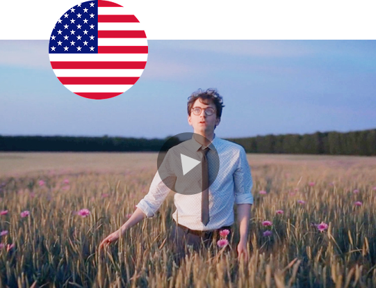
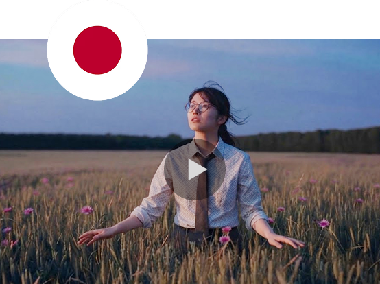
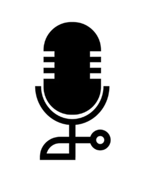
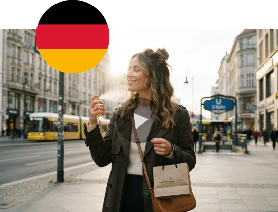
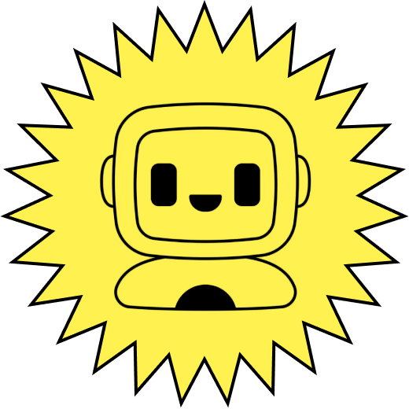
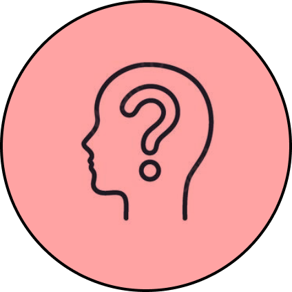
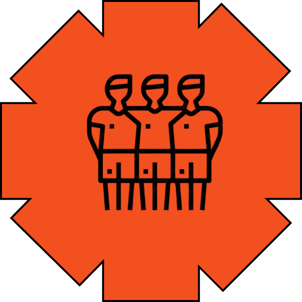
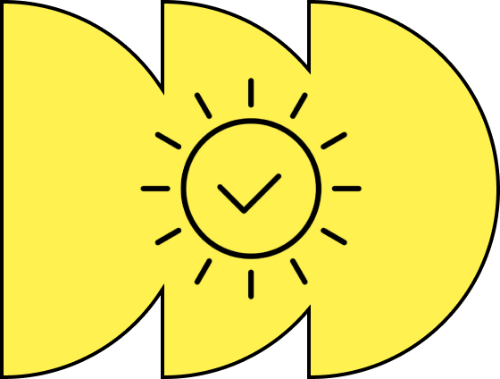
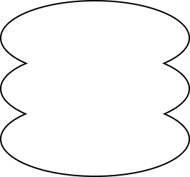
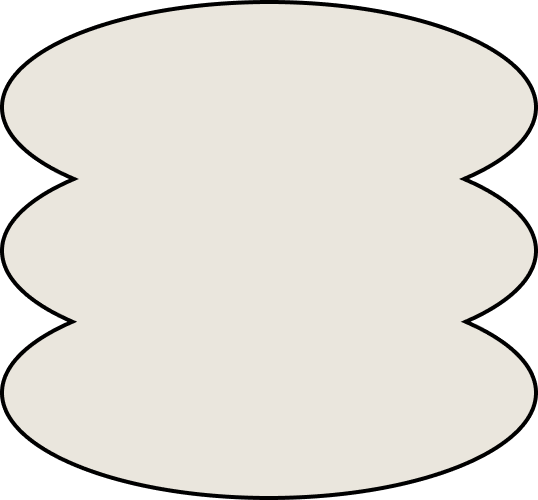
The AI scans the master cut once – brand assets, spoken language, music licensing, visible text – and tags every element Keep or Localize, with a stated reason. The user can override any call before it fans out to every market.
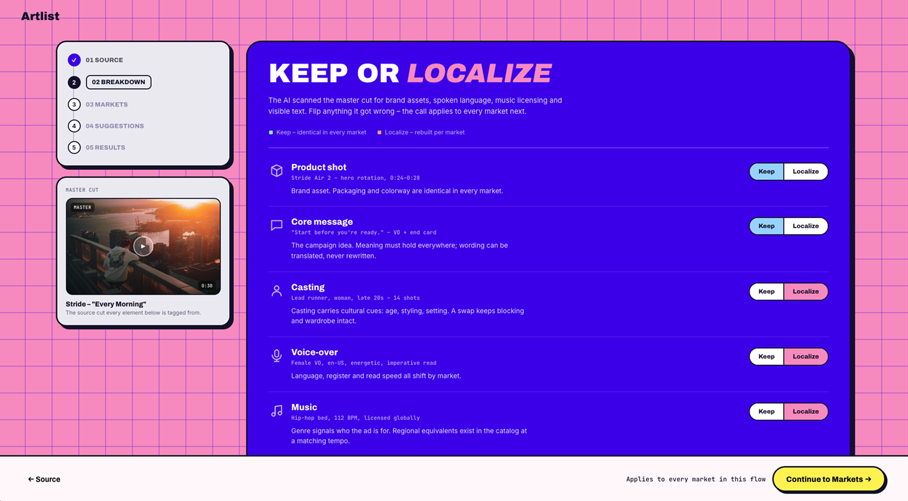
Once markets are chosen, every element flagged Localize gets an AI-generated version per market. The user walks market by market, accepting or reverting each row, confirming one before the flow advances to the next.
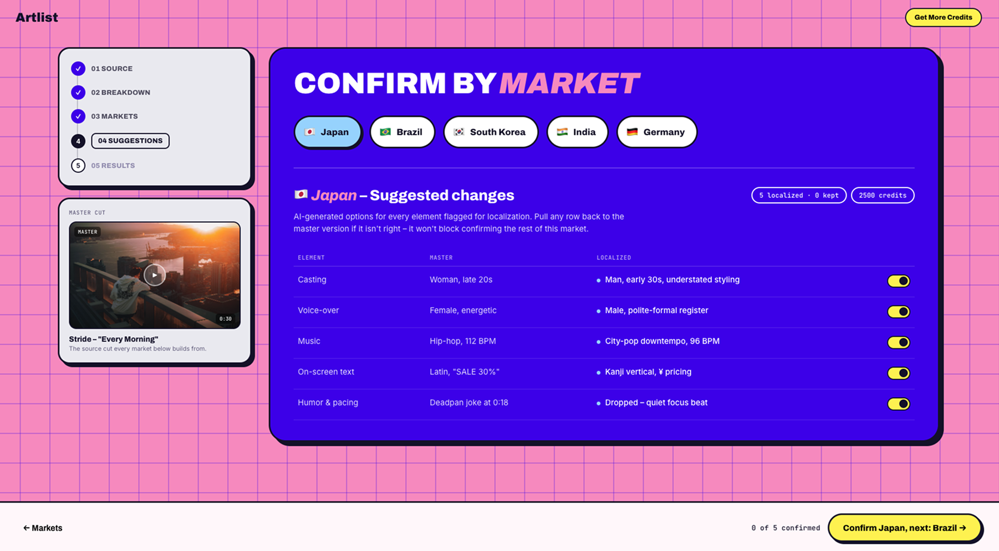
Checked how competitors already approach this – HeyGen, Perso, ElevenLabs, Arcads, WPP Open. All solve the mechanical "how": voice cloning, lip-sync, avatar swaps. None solve the "what and why" – deciding, with visible reasoning, what actually needs to change for a given market. Also confirmed Artlist already owns the raw capability this needs – dubbing, lip-sync, AI avatars, a licensed, culturally-broad catalog – just not the judgment layer tying them together.
Weighed a few options for how a user reaches this new feature: a new top-nav page, a new flow, an option off the three-dot menu, or something buried inside an existing AI Toolkit session. The place that felt most natural – most correct – was inside Flows: it's exactly the step-based shape Flows already models, so the feature lands where producers already build and manage pipelines, instead of teaching a new navigation pattern. That's precisely where I'd have placed it if the brief had been to work within Artlist's existing design language.
But the brief explicitly asked to explore unconventional UI directions and step outside Artlist's existing design system – so I built this as a product with its own separate, entirely different visual language instead. Took it into a playful, fun world, and genuinely enjoyed it 😌
Before settling on this one, I tried a few other ways to show the idea: the master video next to each market's version, a world map where each market opens into its own drawer, even a full dashboard – more useful once you're tracking dozens of markets than for getting the first one right. In the end, I picked the version that shows why the AI made each choice, one element at a time, before anything goes out.
A "director" that walks you through the right steps – for when you want to create something but aren't sure what flow to use, or what you'd actually end up with. Dropped – too small a fix next to localization's bigger swing.
An auto-built style/brand memory across tools, replacing manual style-guide uploads. Dropped – it felt more like a backend fix than a design one, and the brief asked for bold, visible UI, not something invisible.
Music auto-synced to video, aimed at a common complaint. Dropped – tested it myself on two real generations and the existing sync already worked fine.